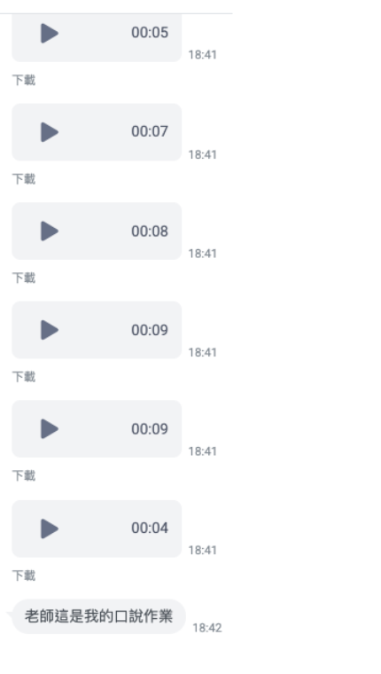
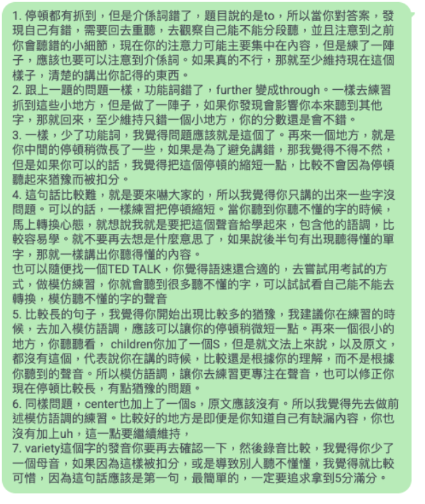

37 套雅思完整模考
全新電腦考模考網站，對應 2026/2 起台灣全面改為電腦考的準備需求。
以第一個客戶資料頁的課程內容為準，重新整理成適合正式網站瀏覽的資訊架構。
全新電腦考模考網站，對應 2026/2 起台灣全面改為電腦考的準備需求。
讀、聽、寫、說全題型破解，包含題型分析、解題技巧與顧問考試心得。
處理各科模考、練習難題與弱底專屬訓練營，錯過也可看錄影。
共 10 篇作文、25 個音檔，由顧問協助找出反覆出現的扣分模式。
依你的情況調整 1 個月、2 個月、3 個月雅思讀書計畫，細到每天怎麼練。
任何備考問題都可在 Line 官方帳號詢問，顧問親自回覆並定期提醒。
課程不是單純把教材丟給你，而是按照備考順序安排，讓每個階段都有清楚任務，學習更有效率。
1 / 2 / 3 個月影片與可列印 PDF，安排每天影片、練習與批改作業。
考試流程、分數說明、電腦考策略與整體備考重點。
各題型分析、Scan / Skim、換句話說方法與 AI 背單字工具。
各題型分析、口音分析、主動聽力與弱底提升方法。
評分方式、圖表與流程分析、議論文分析、AI 文法和用字診斷工具。
評分方式、Word Bank、審題型想點技巧與大量音檔示範。
各科模考、口說寫作難題、弱底訓練與顧問心得分享。
同學心得、題目分享、作文與口說批改整理、常見單字整理，定期更新。
60 分鐘三篇長文，會越來越難。課程會訓練 Scan / Skim、題型判讀、同義改寫與時間分配。
30 分鐘四個部分，生活與學術情境都有。課程會拆解干擾資訊、口音與轉折訊號。
Task 1 與 Task 2 分別訓練資料描述、論證發展、用字文法穩定度，搭配 AI 診斷與顧問批改。
11-14 分鐘三個部分，課程用 Word Bank 與音檔示範訓練想點速度、內容延伸與自然表達。


AI 工具用來減少整理錯誤、查資料和重複練習的時間；真正的方向校準仍由顧問完成。
可指定開通時間；需要延長可加購三個月完整資源延長包。